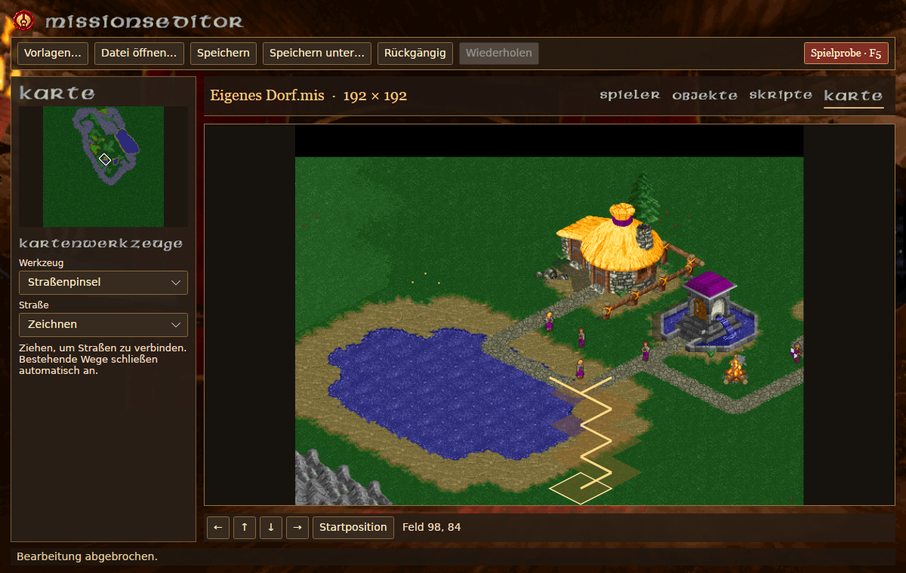
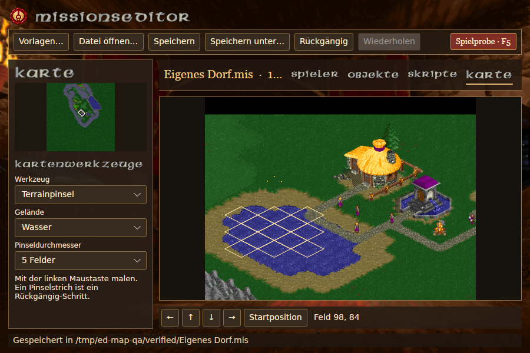
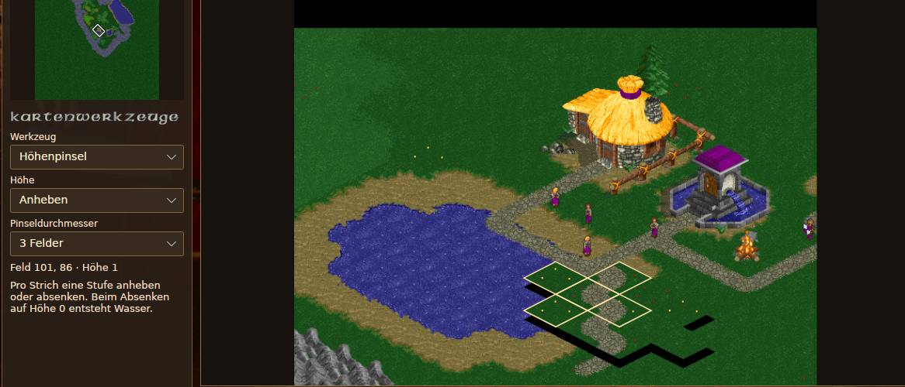
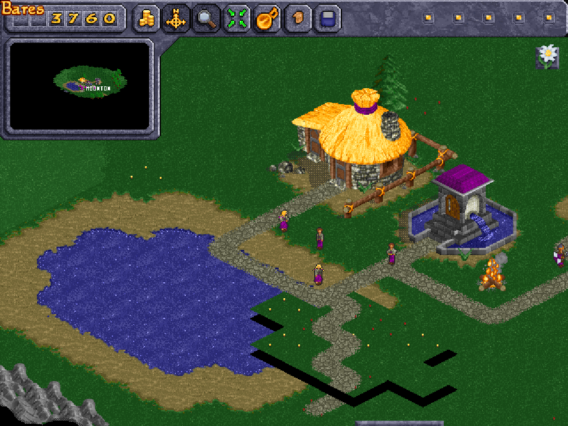

RELEASE · 18. NOVEMBER 2026
Der Missionseditor
Gelände formen, Wege verbinden und die eigene Karte direkt im Spiel testen. Mit Bildern und einer Schritt-für-Schritt-Anleitung.
TESTCLIENT 0.1.0 · LINUX X64
Der eigenständige Missionseditor enthält seine .NET-Laufzeit und Enhanced 0.1.5 für Spieltests mit F5. Die bereits veröffentlichten Spieldaten 1.0.0 werden zusätzlich benötigt.
Du brauchst einen Linux-PC mit Intel-/AMD-64-Bit-Prozessor, das Editor-ZIP und die Spieldaten. Für die erste Probe sind keine Programmierkenntnisse nötig. Die folgenden Bilder zeigen echte Aufnahmen einer bearbeiteten Beispielmission.

SCHRITT 1
Das Editorpaket entpacken
- Oben auf Editor herunterladen klicken und warten, bis der Download fertig ist.
- Im Downloadordner das ZIP über die Entpacken-Funktion deines Dateimanagers vollständig entpacken.
- Den entpackten Ordner
replanted-editor-test-linux-x64öffnen. Darin müssenStart-Editor.sh,replanted-editorund der Ordnerenhancedliegen.
Kontrollpunkt: Du siehst die Datei Start-Editor.sh im Dateimanager. Alle Dateien des Pakets zusammen in diesem Ordner lassen.
SCHRITT 2
Den richtigen Spieldatenordner finden
Wenn das Spiel bereits über den Launcher läuft, verwende dessen Spieldatenpfad aus den Spieleinstellungen. So ist kein erneuter Datendownload nötig.
Noch keine Daten vorhanden? Das Spieldatenpaket 1.0.0 herunterladen und vollständig entpacken. Darin den Unterordner data öffnen.
Kontrollpunkt: Der richtige Ordner enthält diese beiden Unterordner:
data/ ← diesen Ordnerpfad verwenden
├── assets/
│ └── missions/
│ └── m1.mis
└── recovered/
└── palettes/
└── titlepalette.rgbKopiere den vollständigen Pfad dieses Ordners aus der Adresszeile des Dateimanagers. In KDE/Dolphin blendet Strg+L den kopierbaren Pfad ein. Bewahre ihn für den nächsten Schritt auf.
SCHRITT 3
Den Editor starten
- Zurück in den Editorordner aus Schritt 1 wechseln, in dem
Start-Editor.shliegt. - Dort ein Terminal öffnen. Unter KDE/Dolphin öffnet Umschalt+F4 ein Terminal im aktuellen Ordner. Die Tastenkürzel sind im Dolphin-Handbuch beschrieben.
- Diesen Befehl kopieren, im Terminal einfügen und Enter drücken. Damit werden die drei Programme ausführbar:
chmod +x Start-Editor.sh replanted-editor enhanced/bin/bbgame-enhancedAnschließend den Editor starten. Ersetze /DEIN/PFAD/data durch den zuvor kopierten Datenpfad. Die Anführungszeichen stehen lassen, damit auch Leerzeichen im Pfad funktionieren:
./Start-Editor.sh "/DEIN/PFAD/data"Kontrollpunkt: Das Editorfenster öffnet Mission 3. Das Terminal während der Bearbeitung geöffnet lassen; dort erscheinen mögliche Fehlermeldungen.
Geprüft auf Kubuntu 26.04 x64. Die .NET-Laufzeit und Enhanced 0.1.5 sind bereits im Paket. Eine grafische Linux-Sitzung mit den üblichen X11-/Fontconfig-Systembibliotheken wird benötigt.
SCHRITT 4
Die erste Karte bearbeiten
Zum Einstieg oben Vorlagen… öffnen und eine Kampagnenmission auswählen. Rechts oben den Reiter Karte anklicken. Über Startposition unter der Karte gelangst du zum eigenen Dorf.
Gelände malen
- Links unter Werkzeug den Terrainpinsel wählen.
- Unter Gelände das gewünschte Material auswählen, zum Beispiel Wasser. Mit einem Pinseldurchmesser von 1 Feld beginnen.
- Auf einer freien Stelle der Karte die linke Maustaste gedrückt halten und ziehen. Beim Loslassen wird der ganze Strich übernommen.

Höhen verändern
Unter Werkzeug den Höhenpinsel wählen. Unter Höhe zwischen Anheben und Absenken wechseln, dann mit der linken Maustaste malen. Jeder Strich verändert die Höhe um eine Stufe. Auf Höhe 0 entsteht Wasser. Berührt ein Strich geschützte Objektflächen, wird er nicht übernommen.

Straßen zeichnen und entfernen
Straßenpinsel auswählen und Straße → Zeichnen einstellen. Mit gedrückter linker Maustaste über die Karte ziehen. Die helle Vorschau im großen Bild oben zeigt den Verlauf. Beim Loslassen entstehen verbundene Straßenstücke; vorhandene Nachbarwege schließen an. Zum Radieren Entfernen wählen und erneut über den Abschnitt ziehen.
Objekte setzen und verschieben
Objekt setzen auswählen, dann Baum, Getreide, Huhn oder Brunnen wählen und auf eine freie passende Stelle klicken. Mit Objekt verschieben die sichtbare Figur oder das Gebäude mit gedrückter linker Maustaste zum Zielfeld ziehen. Eine ungültige Platzierung wird nicht übernommen.
Etwas ging schief? Oben auf Rückgängig klicken oder Strg+Z drücken. Ein ganzer Pinselstrich zählt als ein Schritt. Strg+Umschalt+Z oder Strg+Y stellt ihn wieder her. Esc bricht die gerade laufende Geste ab.
Mit den Pfeilen unter der Karte oder einem Klick auf die Übersicht links oben verschiebst du den sichtbaren Bereich. Die Reiter Spieler, Objekte und Skripte bieten außerdem Startgold, ausgewählte Vorräte und vorhandene Skriptbelohnungen.
SCHRITT 5
Im Spiel testen und die Karte behalten
- Oben rechts Spielprobe · F5 anklicken oder F5 drücken. Auch noch ungespeicherte Änderungen werden mitgenommen.
- Ein separates Enhanced-Spielfenster öffnet sich am eigenen Dorf. Prüfe dort deine Wege, Höhen und Objekte.
- Das Spielfenster schließen oder zum Editor zurückwechseln und erneut F5 drücken. Danach kannst du im Editor weiterarbeiten.
- Oben Speichern unter… anklicken und eine eigene Datei, zum Beispiel
Meine erste Karte.mis, in deinem Dokumenteordner speichern. Damit bleiben die Originalmissionen erhalten. - Spätere Änderungen dieser eigenen Karte mit Speichern oder Strg+S sichern. Beim nächsten Mal über Datei öffnen… wieder öffnen.

Geschafft: Deine eigene .mis liegt im gewählten Ordner. Ein Spieltest allein speichert diese Datei noch nicht; dafür immer Speichern verwenden.
Wenn etwas nicht klappt
„Start-Editor.sh: No such file or directory“
Das Terminal steht im falschen Ordner oder das ZIP ist noch nicht vollständig entpackt. Öffne den Ordner, in dem Start-Editor.sh sichtbar liegt, und öffne dort ein neues Terminal.
„Permission denied“ / „Keine Berechtigung“
Führe den chmod +x-Befehl aus Schritt 3 erneut aus. Liegt der Editor auf einem Laufwerk, das keine Programmausführung erlaubt, entpacke ihn in einen eigenen Ordner unter deinem Benutzerverzeichnis und starte dort erneut.
„Der Datenordner muss assets/ und recovered/ … enthalten“
Prüfe den Ordnerbaum aus Schritt 2. Der Startbefehl benötigt den Ordner, der beide Unterordner enthält. Kopiere seinen vollständigen Pfad in die Anführungszeichen. Der Beispieltext /DEIN/PFAD/data muss vollständig ersetzt sein.
Die Karte ist aus dem Blick geraten
Unter der Karte auf Startposition klicken. Das bringt die Ansicht zurück zum eigenen Dorf.
Ein Pinselstrich oder Objekt wird nicht übernommen
Probiere eine freie Fläche und einen kleineren Pinsel. Geschützte Objektflächen verhindern Höhenänderungen; Objekte benötigen einen gültigen freien Platz. Lies die Statusmeldung unten im Editor.
F5 startet kein Spiel
Im Editorordner muss enhanced/bin/bbgame-enhanced vorhanden sein. Wiederhole den chmod +x-Befehl aus Schritt 3, prüfe den Datenpfad und lies die Meldung unten im Editor sowie die Ausgabe im Terminal. Für eine Fehlermeldung bitte diese Ausgabe mitsenden.
Kann ich das unter Windows verwenden?
Dieses Editor-Testpaket ist für Linux x64. Die separat veröffentlichten Windows-Spiel- und Launcherpakete enthalten noch keinen abgenommenen Windows-Editor.
Was noch offen ist
Die Objektpalette enthält bislang vier Klassen. Neue leere Karten, Mehrfachauswahl und ein vollständiger Skripteditor stehen noch aus. An abrupten Höhenkanten zeigt der originale Zeichner schwarze Streifen, auch in der Spielprobe.
Bei Fehlermeldungen bitte Werkzeug, Mission, genaue Schritte und Bildschirmauflösung angeben. Eine betroffene eigene .mis und Terminalmeldungen helfen bei der Reproduktion.